El equipo Mercedes-AMG Petronas Formula One Team, conocido simplemente como Mercedes, es una escudería de Fórmula Uno con una rica historia en el deporte. Fundada en 2010 como una toma de control de Brawn GP, el equipo ha dominado la era híbrida de la F1, ganando múltiples campeonatos de pilotos y constructores.
Los pilotos actuales de Mercedes son Lewis Hamilton y George Russell. Lewis Hamilton es uno de los pilotos más exitosos en la historia de la Fórmula Uno, con múltiples campeonatos mundiales en su haber. George Russell, aunque más joven y menos experimentado, ha demostrado ser un talento prometedor en la parrilla.
| Foto | Nombre del Piloto | Número de Carreras en F1 |
|---|---|---|
| 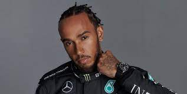 | Lewis Hamilton | 256 |
| 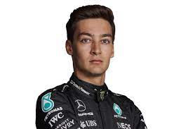 | George Russell | 47 |
Red Bull Racing Honda es una de las escuderías más competitivas en la parrilla de la Fórmula Uno. Fundada en 2005, el equipo ha logrado múltiples campeonatos de pilotos y constructores, desafiando el dominio de equipos tradicionales como Ferrari y Mercedes.
Los pilotos actuales de Red Bull Racing Honda son Max Verstappen y Sergio Pérez. Max Verstappen, conocido por su talento y agresividad en la pista, es uno de los pilotos más emocionantes de la actualidad. Sergio Pérez, con una sólida experiencia en la F1, complementa bien el equipo con su consistencia y habilidad para sumar puntos.
| Foto | Nombre del Piloto | Número de Carreras en F1 |
|---|---|---|
| 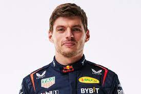 | Max Verstappen | 129 |
| 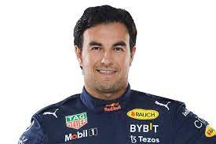 | Sergio Pérez | 205 |
La Scuderia Ferrari es la escudería más antigua de la Fórmula Uno, y también una de las más exitosas. Fundada en 1929, Ferrari ha sido un sinónimo de velocidad, pasión y excelencia italiana en el mundo del automovilismo.
Los pilotos actuales de Ferrari son Charles Leclerc y Carlos Sainz Jr. Charles Leclerc es un joven talento monegasco que ha demostrado un gran potencial en su carrera hasta ahora. Carlos Sainz Jr., con experiencia previa en otras escuderías, aporta estabilidad y consistencia al equipo.
| Foto | Nombre del Piloto | Número de Carreras en F1 |
|---|---|---|
| 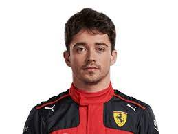 | Charles Leclerc | 69 |
| 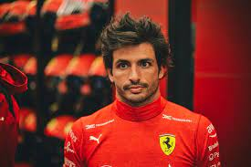 | Carlos Sainz Jr. | 128 |
McLaren F1 Team es una de las escuderías más históricas de la Fórmula Uno. Fundada en 1963, McLaren ha logrado numerosos campeonatos de pilotos y constructores a lo largo de los años, estableciéndose como uno de los nombres más importantes en el deporte.
Los pilotos actuales de McLaren son Daniel Ricciardo y Lando Norris. Daniel Ricciardo, conocido por su sonrisa contagiosa y estilo de conducción agresivo, aporta experiencia y carisma al equipo. Lando Norris, uno de los pilotos más jóvenes en la parrilla, ha impresionado con su velocidad y madurez en la pista.
| Foto | Nombre del Piloto | Número de Carreras en F1 |
|---|---|---|
| 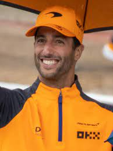 | Daniel Ricciardo | 205 |
 |
Lando Norris | 57 |
Aston Martin Cognizant Formula One Team, anteriormente conocido como Racing Point, es una escudería británica que compite en la Fórmula Uno. El equipo ha logrado resultados notables en los últimos años y está respaldado por el fabricante de automóviles de lujo Aston Martin.
Los pilotos actuales de Aston Martin son Sebastian Vettel y Lance Stroll. Sebastian Vettel, un veterano de la Fórmula Uno con múltiples campeonatos mundiales, aporta experiencia y liderazgo al equipo. Lance Stroll, hijo del propietario del equipo, ha mostrado destellos de velocidad y talento en su carrera hasta ahora.
| Foto | Nombre del Piloto | Número de Carreras en F1 |
|---|---|---|
| 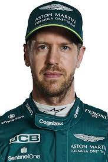 | Sebastian Vettel | 267 |
| 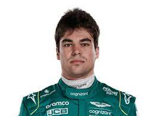 | Lance Stroll | 87 |
Alpine F1 Team es el nombre actual de la escudería de Fórmula Uno que anteriormente era conocida como Renault. El equipo ha tenido una larga historia en la F1 y ha logrado múltiples éxitos a lo largo de los años, incluidos campeonatos de pilotos y constructores.
Los pilotos actuales de Alpine son Fernando Alonso y Esteban Ocon. Fernando Alonso es uno de los pilotos más exitosos de la Fórmula Uno, con múltiples campeonatos mundiales en su haber. Esteban Ocon, aunque más joven y menos experimentado, ha demostrado ser un piloto talentoso y prometedor en la parrilla.
| Foto | Nombre del Piloto | Número de Carreras en F1 |
|---|---|---|
| 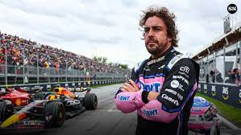 | Fernando Alonso | 324 |
| 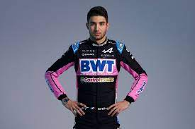 | Esteban Ocon | 91 |
Alfa Romeo Racing Orlen, anteriormente conocido como Sauber Motorsport, es una escudería suiza de Fórmula Uno con una larga historia en el deporte. Fundada en 1993, el equipo ha competido en numerosas temporadas de la F1, con altibajos en su desempeño a lo largo de los años.
Los pilotos actuales de Alfa Romeo son Valtteri Bottas y Guanyu Zhou. Valtteri Bottas, proveniente de Mercedes, aporta experiencia y velocidad al equipo. Guanyu Zhou es un piloto chino que debuta en la F1, siendo el primer piloto de su país en competir en la máxima categoría del automovilismo.
| Foto | Nombre del Piloto | Número de Carreras en F1 |
|---|---|---|
| 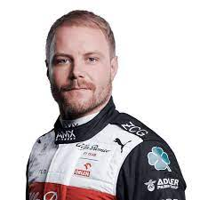 | Valtteri Bottas | 170 |
| 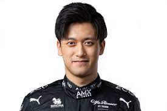 | Guanyu Zhou | 7 |
Haas F1 Team es una escudería estadounidense de Fórmula Uno que debutó en el campeonato en 2016. El equipo es relativamente nuevo en comparación con otros en la parrilla, pero ha demostrado su compromiso con el deporte y su intención de crecer y competir en la categoría.
Los pilotos actuales de Haas son Kevin Magnussen y Nikita Mazepin. Kevin Magnussen es un piloto danés con experiencia en la F1, que regresa al equipo después de haber competido con ellos anteriormente. Nikita Mazepin, de origen ruso, es un debutante en la F1 con una perspectiva de aprendizaje y desarrollo.
| Foto | Nombre del Piloto | Número de Carreras en F1 |
|---|---|---|
| 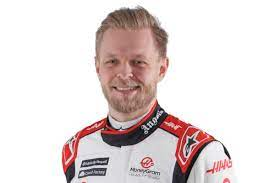 | Kevin Magnussen | 119 |
| 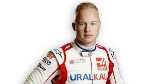 | Nikita Mazepin | 21 |